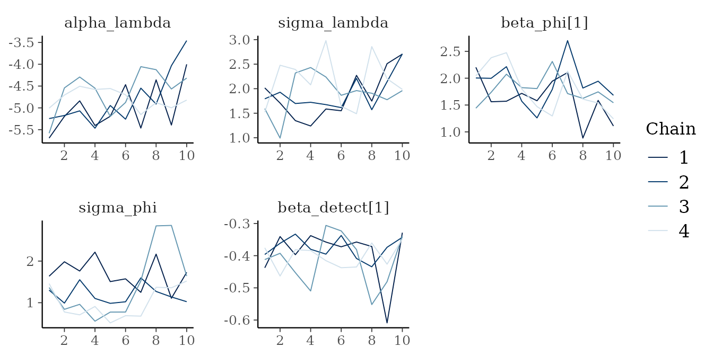
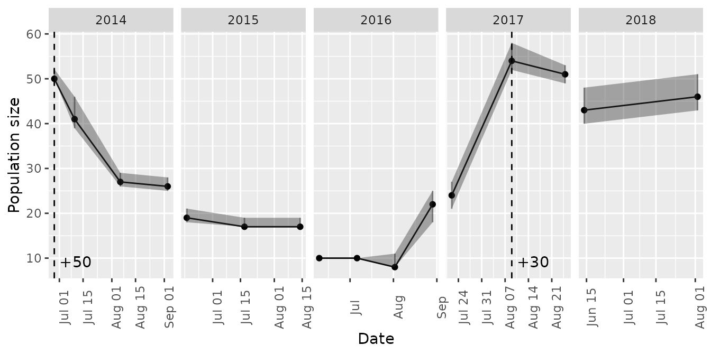
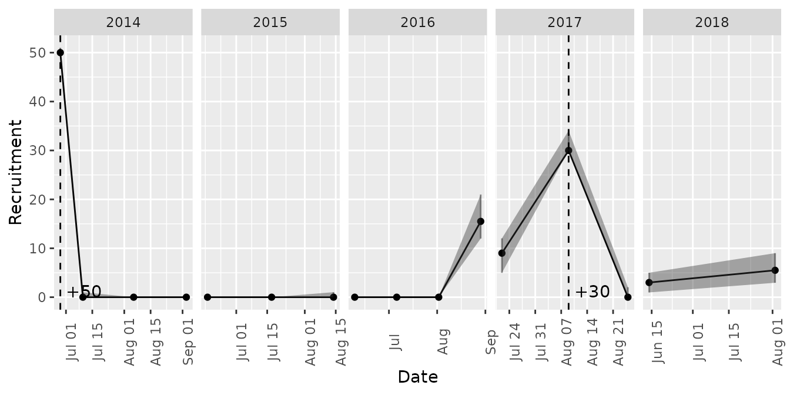
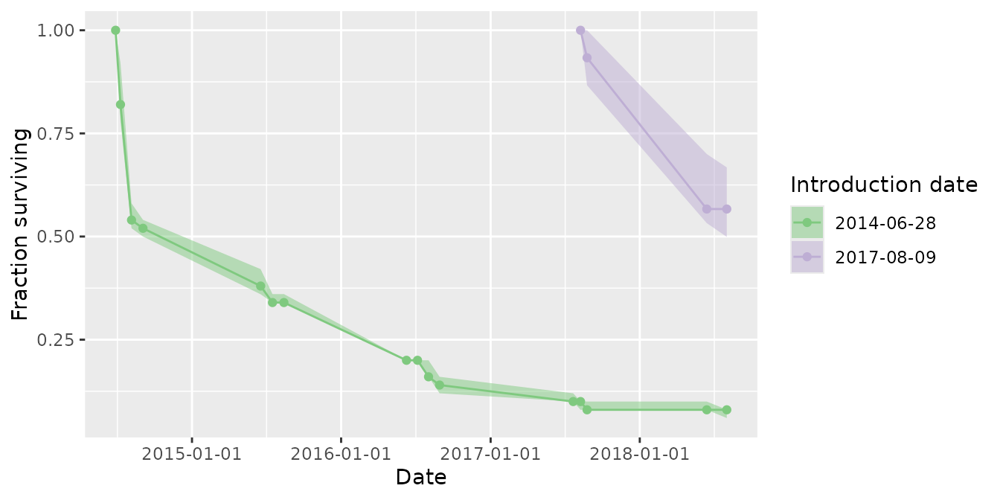
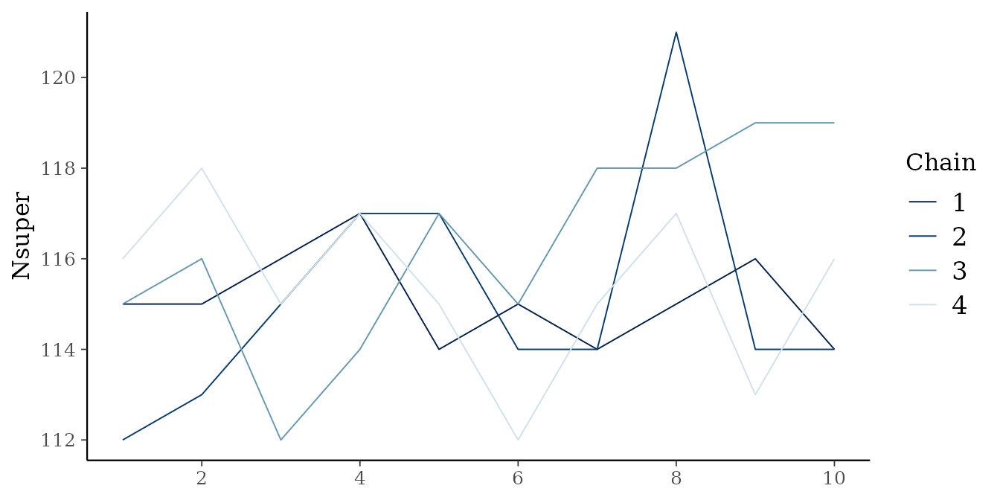

intro-to-mrmr2.RmdThe mrmr2 package is designed to simplify and expedite
mark recapture data processing, parameter estimation, and visualization
for a narrow class of mark recapture data (namely, those collected by
researchers in the Mountain Lakes Research Group (University of
California, Sierra Nevada Amphibian Research Laboratory). It extends the
original mrmr package with optional detection-heterogeneity
random effects (see Detection random-effect
models) and a lower-memory survival plotting method, and can be
installed alongside mrmr without conflict.
The typical workflow involves three steps:
mrmr2::clean_data()
mrmr2::fit_model()
mrmr2::plot_model()
The package comes with example data that illustrate the expected
format. Three files are needed. These files are typically named
something like capture, translocation, and
survey, but the files are specified in the data processing step and any names are
acceptable.
The first file specifies capture data:
library(dplyr)
#>
#> Attaching package: 'dplyr'
#> The following objects are masked from 'package:stats':
#>
#> filter, lag
#> The following objects are masked from 'package:base':
#>
#> intersect, setdiff, setequal, union
library(readr)
library(tibble)
library(mrmr2)
capture <- read_csv(
system.file(
"extdata",
"capture-example.csv",
package = "mrmr2"
)
)
#> Rows: 466 Columns: 19
#> ── Column specification ────────────────────────────────────────────────────────
#> Delimiter: ","
#> chr (9): swab_id, surveyor1, pit_tag_status, frog_sex, frog_state, swabber_...
#> dbl (7): pit_tag_id, site_id, frog_weight, frog_svl, collection_location, r...
#> date (3): survey_date, collection_date, release_date
#>
#> ℹ Use `spec()` to retrieve the full column specification for this data.
#> ℹ Specify the column types or set `show_col_types = FALSE` to quiet this message.
capture <- capture |>
mutate(pit_tag_id = as.character(pit_tag_id))
glimpse(capture)
#> Rows: 466
#> Columns: 19
#> $ swab_id <chr> NA, NA, NA, NA, NA, NA, NA, NA, NA, NA, NA, NA, NA…
#> $ pit_tag_id <chr> "900043000104502", "900043000104574", "90004300010…
#> $ site_id <dbl> 70449, 70449, 70449, 70449, 70449, 70449, 70449, 7…
#> $ survey_date <date> 2014-08-07, 2015-08-16, 2014-07-11, 2015-08-15, 2…
#> $ surveyor1 <chr> "Killion", "Killion", "Demaranville", "Lindauer", …
#> $ pit_tag_status <chr> NA, NA, NA, NA, NA, NA, NA, NA, NA, NA, NA, NA, NA…
#> $ frog_sex <chr> "M", "F", "M", "M", "F", "F", "M", "M", "F", "F", …
#> $ frog_state <chr> "Healthy", "Healthy", "Healthy", "Healthy", "Healt…
#> $ frog_weight <dbl> NA, NA, NA, NA, NA, NA, NA, NA, NA, NA, NA, NA, NA…
#> $ frog_svl <dbl> NA, NA, NA, NA, NA, NA, NA, NA, NA, NA, NA, NA, NA…
#> $ swabber_name <chr> NA, NA, NA, NA, NA, NA, NA, NA, NA, NA, NA, NA, NA…
#> $ treatment <chr> "unexposed", "exposed", "unexposed", "unexposed", …
#> $ collection_date <date> 2014-06-27, 2014-06-23, 2014-06-27, 2014-06-27, 2…
#> $ collection_location <dbl> 72996, 72996, 72996, 72996, 72996, 72996, 72996, 7…
#> $ release_location <dbl> 70449, 70449, 70449, 70449, 70449, 70449, 70449, 7…
#> $ release_date <date> 2014-06-28, 2014-06-28, 2014-06-28, 2014-06-28, 2…
#> $ standard_type <chr> NA, NA, NA, NA, NA, NA, NA, NA, NA, NA, NA, NA, NA…
#> $ load <dbl> NA, NA, NA, NA, NA, NA, NA, NA, NA, NA, NA, NA, NA…
#> $ category <chr> "translocated", "translocated", "translocated", "t…Note that the system.file function generates a path to
the capture-example.csv file, but in a real application,
you would use a path to a local file (real data, not the example data
included in the package). The capture file must contain, at a minimum,
pit_tag_id and survey_date columns, but
additional columns can also be included (e.g., survival covariates). Each row in this file
represents a capture or recapture event.
The second file specifies translocation/reintroduction data, and at a
minimum it must contain release_date and
pit_tag_id columns:
translocation <- read_csv(
system.file(
"extdata",
"translocation-example.csv",
package = "mrmr2"
)
)
#> Rows: 80 Columns: 17
#> ── Column specification ────────────────────────────────────────────────────────
#> Delimiter: ","
#> chr (9): swab_id, treatment, pit_tag_status, frog_sex, frog_state, frog_loc...
#> dbl (6): pit_tag_id, frog_weight, frog_svl, quant_cycle, start_quant, load
#> date (2): release_date, swabbing_date
#>
#> ℹ Use `spec()` to retrieve the full column specification for this data.
#> ℹ Specify the column types or set `show_col_types = FALSE` to quiet this message.
glimpse(translocation)
#> Rows: 80
#> Columns: 17
#> $ swab_id <chr> "RKS16752", "RKS16755", "RKS16756", "RKS16757", "RKS167…
#> $ pit_tag_id <dbl> 9.00043e+14, 9.00043e+14, 9.00043e+14, 9.00043e+14, 9.0…
#> $ treatment <chr> "exposed", "exposed", "exposed", "exposed", "exposed", …
#> $ release_date <date> 2014-06-28, 2014-06-28, 2014-06-28, 2014-06-28, 2014-0…
#> $ swabbing_date <date> 2014-06-23, 2014-06-23, 2014-06-23, 2014-06-23, 2014-0…
#> $ pit_tag_status <chr> "Y", "Y", "Y", "Y", "Y", "Y", "Y", "Y", "Y", "Y", "Y", …
#> $ frog_sex <chr> "F", "F", "M", "M", "M", "F", "F", "F", "M", "F", "F", …
#> $ frog_state <chr> "Healthy", "Healthy", "Healthy", "Healthy", "Healthy", …
#> $ frog_location <chr> "in lake", "in lake", "in lake", "in lake", "in lake", …
#> $ frog_weight <dbl> 11, 13, 12, 10, 10, 10, 11, 13, 13, 11, 10, 11, 11, 10,…
#> $ frog_svl <dbl> 46, 51, 44, 42, 44, 40, 45, 48, 49, 47, 48, 47, 46, 44,…
#> $ swabber_name <chr> "Kauffman", "Kauffman", "Kauffman", "Kauffman", "Kauffm…
#> $ frog_comments <chr> "Treated, for translocation to 70449.", "Treated, for t…
#> $ quant_cycle <dbl> 35.72, 26.40, 28.51, 34.27, 36.12, 28.55, 31.44, 27.37,…
#> $ start_quant <dbl> 0.09, 51.65, 12.33, 0.25, 0.07, 12.03, 1.68, 26.74, 0.4…
#> $ standard_type <chr> "genomic", "genomic", "genomic", "genomic", "genomic", …
#> $ load <dbl> 432, 247920, 59184, 1200, 336, 57744, 8064, 128352, 196…Each row corresponds to a translocation event of one unique individual. Because some mark-recapture datasets do not include translocation or reintroduction actions, this file is optional.
The third file specifies survey-level data, and at a minimum it must
contain survey_date, primary_period, and
secondary_period columns:
survey <- read_csv(
system.file(
"extdata",
"survey-example.csv",
package = "mrmr2"
)
)
#> Rows: 51 Columns: 4
#> ── Column specification ────────────────────────────────────────────────────────
#> Delimiter: ","
#> dbl (3): primary_period, secondary_period, survey_duration
#> date (1): survey_date
#>
#> ℹ Use `spec()` to retrieve the full column specification for this data.
#> ℹ Specify the column types or set `show_col_types = FALSE` to quiet this message.
glimpse(survey)
#> Rows: 51
#> Columns: 4
#> $ survey_date <date> 2014-06-28, 2014-07-10, 2014-07-11, 2014-07-12, 2014…
#> $ primary_period <dbl> 1, 2, 2, 2, 3, 3, 3, 4, 4, 4, 5, 5, 5, 6, 6, 6, 7, 7,…
#> $ secondary_period <dbl> 0, 1, 2, 3, 1, 2, 3, 1, 2, 3, 1, 2, 3, 1, 2, 3, 1, 2,…
#> $ survey_duration <dbl> 0.00, 7.61, 7.00, 5.35, 7.33, 7.58, 8.16, 7.58, 7.85,…Here, each row is a unique survey. If translocations or
reintroductions occurred at the site, these actions need to be included
in the survey dataset, each as a typical survey event.
Specifically, survey_date and primary_period
values are provided, the primary_period is sequential with
all survey records in the dataset based on visit_date, and
secondary_period = 0. Translocations/reintroductions cannot
occur during a primary period. Therefore, the survey_date
for translocation/reintroduction records cannot overlap with the
survey_date range of any primary period.
To load and process the data, provide paths to the data files as
arguments to the mrmr2::clean_data() function:
data <- clean_data(capture, survey, translocation)This function performs several data-preparation steps. It checks the
capture, survey, and translocation/reintroduction data for common
problems (e.g., duplicate records, dead animals left in the capture
data, unparseable dates), and renumbers the primary periods and inserts
a placeholder pre-study period, deriving each period’s representative
survey date, year, and overwinter status from the provided dates. It
builds the individual-by-primary-period-by-secondary-period capture
history, then performs data augmentation: padding the observed
individuals with a large number of all-zero pseudo-individuals to form
the fixed-size superpopulation of
individuals referenced in Model structure
below. Finally, it constructs the detection and survival covariate
design matrices from the capture_formula and
survival_formula arguments, described in the next two
sections. The output provides data frames as list elements, and a list
element called stan_d, which contains data that has been
pre-processed for model fitting.
Survey-level covariates that might affect the probability of
detection can be included via the capture_formula argument
to clean_data. Note: it is a good idea to
ensure that any continuous covariates are rescaled prior to using them
as covariates to have mean = 0 and unit standard deviation. This can be
achieved by adding a column to the captures data Using a
covariate value like year, which typically has a mean in
the thousands and a standard deviation far from one may cause numerical
issues when fitting a model.
A detection covariate, such as person_hours, can be
included as follows:
# center and scale the covariate
captures <- captures |>
mutate(c_person_hours = c(scale(person_hours)))
# specify the formula
data <- clean_data(captures, surveys, translocations,
capture_formula = ~ c_person_hours)Individual-level survival covariates can be included via the
survival_formula and survival_fill_value
arguments. Both of these arguments must be specified because covariate
values for pseudo-individuals must be filled in (they are never
observed). For example, to evaluate the effect of an experimental
treatment, if some individuals belong to a “treated” group and others
belong to an “control” group, then one of these groups must be specified
as a fill value (e.g., “treated” or “control”, depending on the
experiment):
# specify the formula
data <- clean_data(captures, surveys, translocations,
survival_formula = ~ treatment,
survival_fill_value = c(treatment = "treated"))The mrmr2 package implements a Bayesian open-population
Jolly-Seber mark recapture model with known additions to the population
(introduced adults). The model tracks the states of
individuals that comprise a superpopulation made up of real and
pseudo-individuals (see Joseph and Knapp 2018, Ecosphere for
details).
We assume a robust sampling design where the states of individuals are constant within primary periods, which have repeat secondary periods within them (during which observations are made). The possible states of individuals include “not recruited”, “alive”, and “dead”. The possible observations of individuals include “detected” and “not detected”. We assume that individuals that are in the “not recruited” or “dead” states are never detected (i.e., there are no mistakes in the individual PIT tag ID records).
For reference, the parameters estimated by the model are as follows:
| Parameter | Symbol | Model | Definition |
|---|---|---|---|
alpha_lambda |
all | Intercept of per-primary-period recruitment probability, on the logit scale | |
sigma_lambda |
all | Standard deviation of the recruitment random effect
(eps_lambda) across primary periods |
|
eps_lambda |
all | Standardized per-primary-period random effect on recruitment probability | |
lambda |
all | Probability that an as-yet-unrecruited individual is recruited during a given primary period | |
beta_phi |
all | Coefficients (intercept and any survival covariates) for survival probability, on the logit scale | |
sigma_phi |
all | Standard deviation of the survival random effect
(eps_phi) across primary periods |
|
eps_phi |
all | Per-primary-period random effect on survival probability | |
phi |
all | Probability that an alive individual survives from one primary period to the next | |
beta_detect |
all | Coefficients (intercept and any detection covariates) for detection probability, on the logit scale | |
sigma_detect_period |
detect_re |
Standard deviation of the between-primary-period detection random
effect (eps_detect_period) |
|
eps_detect_period |
detect_re |
Per-primary-period random effect on detection probability, shared by all surveys in that period | |
sigma_detect_occasion |
detect_re |
Standard deviation of the within-primary-period (per-survey)
detection random effect (eps_detect_occasion) |
|
eps_detect_occasion |
detect_re |
Per-survey random effect on detection probability, nested within primary period | |
sigma_detect_indiv |
indiv_re |
Standard deviation of the individual-level detection random effect
(eps_detect_indiv) |
|
eps_detect_indiv |
indiv_re |
Per-individual random effect on detection probability (individual detection heterogeneity, ) | |
s |
all | Latent state of each individual (not yet recruited, alive, or dead) in each primary period | |
N |
all | Estimated population size (number of “alive” individuals) in each primary period | |
B |
all | Estimated number of newly recruited individuals in each primary period | |
Nsuper |
all | Estimated superpopulation size: the total number of individuals ever alive during the study |
To fit a mark-recapture model, use mrmr2::fit_model().
This model accounts for known introductions into the population, and has
random effects to account for variation in survival and recruitment
through time. It is also possible to add random effects to account for
variation in detection at the period,
occasion, and individual level.
The default number of chains is 4. Generally, at least 1000 warmup and 1000 sampling iterations should be used; the example model below uses only 10 iterations of each to ensure a short run time.
mod <- fit_model(
data = data,
chains = 4,
iter_warmup = 10,
iter_sampling = 10
)To reduce mrmr2::fit_model() run times, use within-chain
parallelization by providing the following additional arguments:
cpp_options = list(stan_threads = TRUE) which compiles
the model with threading support.parallel_chains specifies the number of chains to run
in parallel, and must be
the number of chains.threads_per_chain set to some integer value > 1. To
minimize run times, set this to a value that ensures that all physical
cores are being used. The number of parallel_chains × threads_per_chain
must equal the number of physical cores available. For example, on a
machine with 8 physical cores, specify 4 chains, 4 parallel chains, and
2 threads per chain. On a machine with 16 physical cores, specify 4
chains, 4 parallel chains, and 4 threads per chain. In the following
code chunk, threads per chain is set automatically based on the number
of cores available.
mod <- fit_model(
data = data,
chains = 4,
parallel_chains = 4,
threads_per_chain = max(1, parallel::detectCores() %/% 4),
cpp_options = list(stan_threads = TRUE),
iter_warmup = 1000,
iter_sampling = 1000
)To diagnose potential non-convergence of the MCMC algorithm, inspect traceplots:
pars_to_plot <- c('alpha_lambda',
'sigma_lambda',
'beta_phi',
'sigma_phi',
'beta_detect')
bayesplot::mcmc_trace(mod$m_fit$draws(pars_to_plot))
Also check the Rhat estimates to see whether they indicate of a lack of convergence (Rhat values 1.01):
mod$m_fit$summary(pars_to_plot)
#> # A tibble: 5 × 10
#> variable mean median sd mad q5 q95 rhat ess_bulk ess_tail
#> <chr> <dbl> <dbl> <dbl> <dbl> <dbl> <dbl> <dbl> <dbl> <dbl>
#> 1 alpha_lambda -4.74 -4.76 0.529 0.399 -5.41 -3.81 1.19 20 20
#> 2 sigma_lambda 1.80 1.69 0.464 0.467 1.20 2.56 1.20 20 20
#> 3 beta_phi[1] 1.83 1.78 0.417 0.402 1.18 2.46 1.04 20 20
#> 4 sigma_phi 1.07 1.01 0.322 0.251 0.583 1.63 0.988 20 20
#> 5 beta_detect… -0.390 -0.378 0.0600 0.0630 -0.486 -0.307 0.984 20 20By default (model = "base"), detection probability is a
purely deterministic function of any covariates supplied via
capture_formula to clean_data(). With the
default capture_formula = ~ 1, every survey in the dataset
shares one scalar detection probability. Survival and recruitment, by
contrast, already have a random effect that lets them vary by primary
period. mrmr2::fit_model() offers two optional extensions,
selected with the model argument, that add an analogous
random effect to detection:
model = "detect_re" adds a between-primary-period
random effect and a within-primary-period (per-survey) random effect to
detection probability. Simulation work found this mainly corrects
overconfident (too-narrow) uncertainty intervals on abundance
(N) and recruitment (B) when true
detectability drifts across periods or survey occasions — it has little
effect on the point estimates themselves.model = "indiv_re" adds an individual-level random
effect to account for some individuals being persistently harder to
detect than others (e.g., due to body size, behavior, or microhabitat
use). Unlike "detect_re", ignoring real individual
heterogeneity of this kind causes a genuine negative bias in
point estimates of N — chronically hard-to-detect
individuals get undercounted — matching classical closed-population
heterogeneity (M_h) theory.
mod_indiv_re <- fit_model(
data = data,
model = "indiv_re",
parallel_chains = parallel::detectCores(),
threads_per_chain = max(1, parallel::detectCores() %/% 4),
cpp_options = list(stan_threads = TRUE),
iter_warmup = 1000,
iter_sampling = 1000
)These extensions are not free. Both take longer to fit than
"base", and "indiv_re" in particular produces
substantially larger saved fits, since its random effect has one entry
per individual in the augmented superpopulation (M,
typically several times the number of animals ever observed) rather than
one per primary period or survey. "detect_re"’s two
variance components are only weakly separable, which can trigger
divergent transitions when one of them is at or near zero;
fit_model() handles this automatically by defaulting
adapt_delta to 0.95 (rather than cmdstanr’s
usual 0.8) whenever model = "detect_re" and
adapt_delta is left unspecified.
One more caveat when interpreting a "detect_re" fit:
with only a few secondary surveys per primary period, the model can
attribute some of what is really per-survey
(sigma_detect_occasion) noise to the between-period term
(sigma_detect_period) instead, purely because a small
sample of occasion-level draws can look like a period-level shift by
chance. Before concluding there is genuine period-to-period variation in
detectability, compare the posterior for
sigma_detect_period against the noise floor it would show
even with no real period effect, roughly
sigma_detect_occasion / sqrt(J), where J is
the number of secondary surveys in a primary period. This between-period
versus survey-level ambiguity doesn’t bias N,
B, phi, or lambda — those depend
only on the sum of the two random effects — but it does mean the two
sigma estimates shouldn’t be read in isolation.
Time series of abundance, recruitment, and survival of introduced
cohorts are available through the mrmr2::plot_model()
function.
plot_model(mod, what = 'abundance')
plot_model(mod, what = 'recruitment')
plot_model(mod, what = 'survival')
#> Joining with `by = join_by(primary_period)`
what = 'survival' only pulls posterior draws of the
latent state (s) for translocated individuals, rather than
for every individual (real and data-augmented pseudo-individual) tracked
by the model. On sites with a large superpopulation relative to the
number of translocated individuals, this keeps memory use for this plot
far below what it would be if the full s array were pulled
and then filtered down afterward.
If individuals have been translocated into sites, you can generate a table of estimated survival through time for each cohort (release date) as a function of years since introduction:
survival_table(mod)
#> Joining with `by = join_by(pit_tag_id)`
#> Joining with `by = join_by(primary_period)`
#> # A tibble: 7 × 5
#> years_since_introduction release_date lo_survival median_survival hi_survival
#> <dbl> <date> <dbl> <dbl> <dbl>
#> 1 0 2014-06-28 0.600 0.627 0.667
#> 2 0 2017-08-09 0.867 0.9 1
#> 3 1 2014-06-28 0.347 0.353 0.373
#> 4 1 2017-08-09 0.5 0.558 0.650
#> 5 2 2014-06-28 0.17 0.175 0.180
#> 6 3 2014-06-28 0.0867 0.0933 0.113
#> 7 4 2014-06-28 0.07 0.08 0.1You can also get estimates of survival through time by individual or cohort:
survival_table(mod, by_cohort = TRUE)
#> Joining with `by = join_by(pit_tag_id)`
#> Joining with `by = join_by(primary_period)`
#> # A tibble: 7 × 5
#> years_since_introduction release_date lo_survival median_survival hi_survival
#> <dbl> <date> <dbl> <dbl> <dbl>
#> 1 0 2014-06-28 0.600 0.627 0.667
#> 2 0 2017-08-09 0.867 0.9 1
#> 3 1 2014-06-28 0.347 0.353 0.373
#> 4 1 2017-08-09 0.5 0.558 0.650
#> 5 2 2014-06-28 0.17 0.175 0.180
#> 6 3 2014-06-28 0.0867 0.0933 0.113
#> 7 4 2014-06-28 0.07 0.08 0.1
survival_table(mod, by_individual = TRUE)
#> Joining with `by = join_by(pit_tag_id)`
#> Joining with `by = join_by(primary_period)`
#> # A tibble: 310 × 6
#> years_since_introduction release_date pit_tag_id lo_survival median_survival
#> <dbl> <date> <chr> <dbl> <dbl>
#> 1 0 2014-06-28 9000430001… 1 1
#> 2 0 2014-06-28 9000430001… 1 1
#> 3 0 2014-06-28 9000430001… 1 1
#> 4 0 2014-06-28 9000430001… 0.333 0.333
#> 5 0 2014-06-28 9000430001… 0 0
#> 6 0 2014-06-28 9000430001… 0.333 0.333
#> 7 0 2014-06-28 9000430001… 0 0
#> 8 0 2014-06-28 9000430001… 0.333 0.333
#> 9 0 2014-06-28 9000430001… 1 1
#> 10 0 2014-06-28 9000430001… 1 1
#> # ℹ 300 more rows
#> # ℹ 1 more variable: hi_survival <dbl>Any of the plotting functionality that you would expect from a
stanfit model is available as well, by accessing the
m_fit list element from a model object. For example, we
could assess the posterior for the superpopulation size:
bayesplot::mcmc_trace(mod$m_fit$draws("Nsuper"))
In some cases, there may not be any introductions of animals into a
population. The only difference in implementation in such cases is that
the translocations argument to clean_data()
can be omitted:
data_no_trans <- clean_data(captures, surveys)
mod_no_trans <- fit_model(data_no_trans)When individuals are removed from a population, e.g., for
translocation, these known removals can be included as data to increase
the precision of abundance estimates. An example dataset fitting this
case is included at an imaginary site called “Equid”. Note below that we
filter out dead animals – any dead animals encountered on surveys should
be in the removals data, and not in the
captures data frame, which should only contain live animals
(those that might survive to the next primary period).
captures <- system.file("extdata",
"equid-captures.csv",
package = "mrmr2") |>
read_csv |>
filter(capture_animal_state != 'dead')
surveys <- system.file("extdata",
"equid-surveys.csv",
package = "mrmr2") |>
read_csv
removals <- system.file("extdata",
"equid-removals.csv",
package = "mrmr2") |>
read_csv
d <- clean_data(captures, surveys, removals = removals)
m <- fit_model(d, parallel_chains = 2, chains = 2)